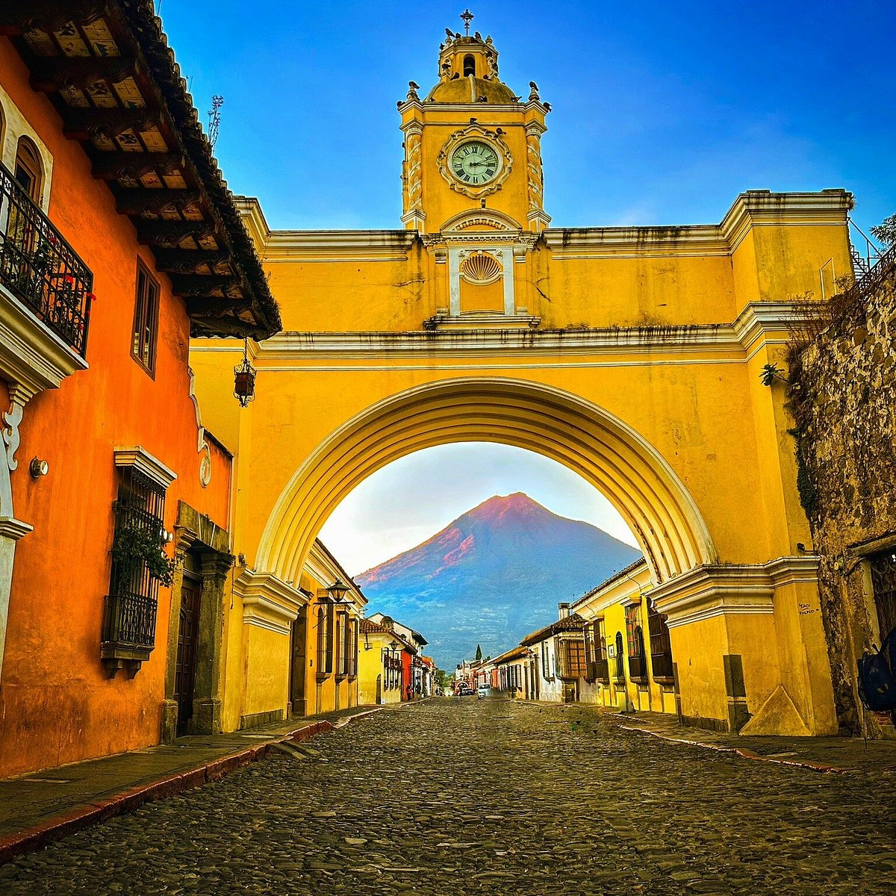
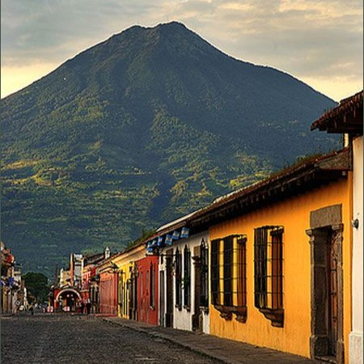
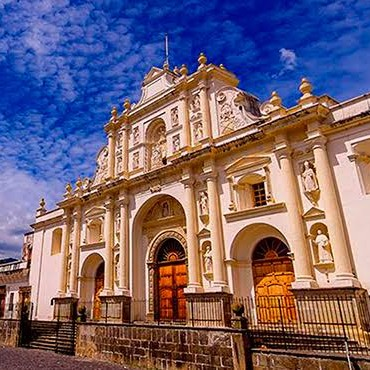
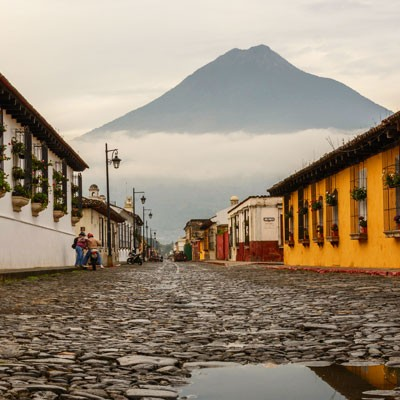

Descripción del lugar
Antigua Guatemala es una ciudad ubicada en el departamento de Sacatepéquez, a unos 45 km de la Ciudad de Guatemala. Fue la tercera capital del Reino de Guatemala durante la época colonial y hoy es Patrimonio de la Humanidad declarado por la UNESCO. Destaca por su arquitectura colonial, sus calles empedradas, sus iglesias y ruinas históricas, y las vistas hacia los volcanes de Agua, Fuego y Acatenango.
Galería de imágenes




Itinerario de la excursión
| Fecha | Horario | Actividad | Lugar |
|---|---|---|---|
| 07:00 am | Salida desde la Ciudad de Guatemala | Punto de encuentro | |
| 08:30 am | Llegada y recorrido guiado | Arco de Santa Catalina | |
| 10:00 am | Visita a ruinas coloniales | Convento de las Capuchinas | |
| 12:30 pm | Almuerzo | Mercado de artesanías | |
| 02:00 pm | Tiempo libre y regreso | Parque Central |
Otras actividades disponibles
- Tour en bicicleta por el centro histórico
- Caminata al volcán de Pacaya
- Visita a fincas de café cercanas
- Clases de elaboración de chocolate artesanal
- Recorrido nocturno fotográfico por las ruinas iluminadas